摘要
公共安全是社会尺度下公民得到的外部环境和秩序的保障，其管理水平在一定程度上反映了一个国家或地区的公共服务水平。近年来，由于国内不同地区收入差距的加大、以及周边政治环境的动荡，危害公共安全的事件时有发生，给公民个人生命和财产带来了严重损害；同时互联网技术的普及使得事件消息的传播不再受空间限制，传播行为也 更为复杂，给传统的公共安全管理模式带来了巨大挑战。针对这一需求，本文提出一种基于多维（时间、空间、语义）数 据分析的公共安全事件管理方法，包括同类、异类事件的相关性分析、以及预测未来一段时间内同地区发生类似事件的 可能性。研究首先基于公开的新闻和微博报道数据，结合其他多种数据源（如地区人口分布数据、GDP数据等），对公交 车爆炸、暴力恐怖、以及校园砍杀三类事件进行识别和提取；然后通过相关性分析与数据可视化的方法，对已提取事件 的媒体传播规律、事件发生的时空共性进行分析研究；最后通过特征工程方法对时间、空间、语义特征进行提取，并采 用Gradient-Boosting算法对未来一段时间内某地区公共安全事件是否发生进行预测，同时利用回归树（Regression Trees） 算法对该地区发生的频次进行预测。交叉验证的实验结果表明，我们提出的方法能够揭示在不同时空尺度下事件发生的 内在联系，对多类事件在未来1～3个月内发生次数的预测准确度达到65%～82%，充分展示了该方法在以预防为主的新 型公共安全事件管理中的重要意义。
数据集与预处理
针对本课题，我们有3个核心数据集合（如下表所 示）。分别是新闻和微博数据集、新闻传播信息数据 集、微博用户资料数据集。
| # | 数据集 | 记录数 |
|---|---|---|
| 1 | 新闻和微博数据集 | 540205(54万) |
| 2 | 新闻传播信息 | 257550(25万) |
| 3 | 微博用户资料 | 243365(24万) |
原始数据存在一些问题，主要有三点：存在重复 记录、信息不完整、事件类型标注不准确。这些重复 数据、杂质数据对后续的事件提取、特征提取、关联 分析、预测、等工作造成很大影响，因此数据预处理 工作十分重要，直接关系到后续处理，对结果的好坏 具有很大影响。预处理工作分为数据去重、信息完整化、事件类型标签修正三步。
事件提取
经过数据去重、信息完整化、事件类型标签修正 的预处理之后，与公共事件无关的杂志数据已被过滤 掉，得到公交车爆炸、暴恐、校园砍杀三个系列事件 的所有新闻。我们的事件提取工作正是基于针对这三 个系列事件的所有新闻，分为三个系列分别进行处理， 三个系列事件的处理流程相同。
事件提取工作分为两部分，采用TF-IDF相似度匹 配算法进行事件提取；采用开放数据微信平台，以众包的方法对事件进行人工标注，对TF-IDF相似度匹配 算法的计算结果进行评估与检验，进而对算法进行修 正。整体架构如下图所示。
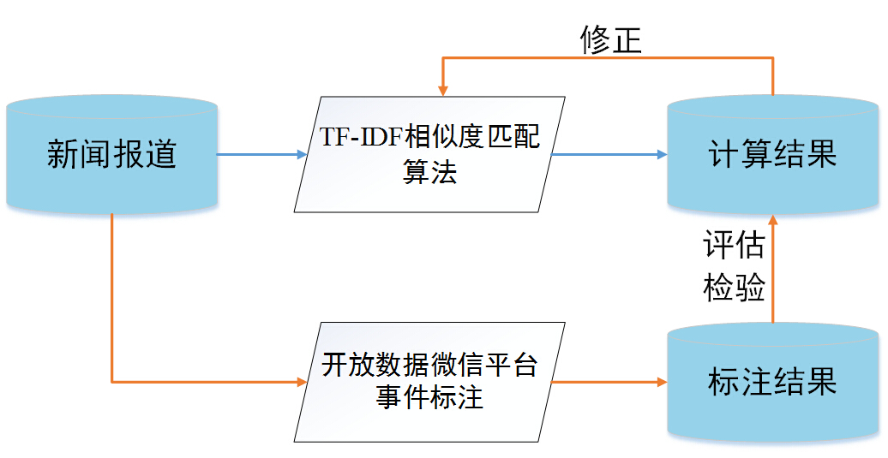TF-IDF相似度匹配算法
一起公共事件会有许多相关媒体报导，包括新闻 报导以及微博报导。即使是针对同一个事件的报导， 也会有很大的差别，包括时间上的差别与内容上的差 别。比如针对同一事件的不同报导在时间上可能相隔数周，不同媒体对同一事件报导风格相差迥异。如何 在这些海量的报导中识别出哪些属于对相同事件的报 导，进而把事件提取出来具有很大挑战。TF-IDF相似 度匹配算法通过设定时间阈值，定义并计算新闻间的 相似度，根据相似度对不同的新闻分为不同的簇，每 一簇中的所有新闻认为是对同一事件的报导，进而实 现事件提取。
算法的输入为每一条新闻的主键、报导时间(精确 到天)、标题、正文内容、新闻所属事件类别，输出为 每一条新闻对应的事件主键，其中事件主键自动生成。 在使用TF-IDF相似度匹配算法进行事件提取之前，我 们做如下准备工作：
- 报导事件类型分系列处理
- 时间地点人物信息提取
- 同系列事件时间排序
同时，我们提出两条假设：
- 假设1 某事件可以由时间、地点、人物三个 要素唯一确定。
- 假设2 事件发生时间与第一条新闻发表时间相隔 很近，即为时间发生时间就是第一条新闻的报导时间。
在准备工作中，我们针对每一个媒体报道提出了一个人名地名词库。我们对每个系列的媒体报道中，结合每一条媒体报导的词库，整合成一个所有人名、地名词库。把每一条新闻用一个向量表示，向量的维度即为同系列事件中所有媒体报导的词语。之后，每一条媒体报导的向量计算其中每个词语的TF-IDF值。TF-IDF是一种统计方法，用以评估某词对于一个语料库中的其中一份文件的重要程度，我们用TF-IDF值作为每条媒体报导特征的数值化表示。
我们已将每一条媒体报导用关键词向量表示出，我们认为向量相近的媒体报导，属于同一类事件。本文用媒体报导向量的余弦相似度定量表示媒体报导之间的相似度，并认为相似度达到一定阈值的一簇媒体报导均属于同一类事件。假设我们已有n类事件，每类事件包含一簇媒体报导，并已报导按照时间从前到后排好序。我们对每一事件簇中的所有新闻报导向量累加取平均，所得向量记为这一事件簇的向量。对媒体报导k做事件分类时，我们计算事件k和已有事件簇的余弦相似度，得出一系列的余弦相似度值，取最大的值cosi，如果cosi大于阈值(设为0.15)，则把该条媒体报导标注为事件，否则把该条媒体报导归为新的事件。
开放数据微信平台事件标注
我们设计了事件提取算法，然而在自然语 言理解的问题上，机器无法完全取代人类。对于一些 具体词汇在不同语义语境下的理解，人与机器多多少 会出现一些区别。比如按照算法，会识别“街边咖啡厅 爆炸，导致公交车站牌被炸毁”这一条新闻为公交车 爆炸事件，而实际上该条新闻应该属于暴恐事件。因 此算法会有一定误差，如何发现这些识别错误的数据 记录对修正我们的算法是一项很重要的工作，最有效的方法就是人工对各条数据集进行事件类别和独立事 件标注。
然而数据集记录多达50余万条，如此庞大的数据 量，为人工标注带来了巨大的挑战。我们利用上海交通 大学开放数据共享平台（http://data.sjtu.edu.cn，如图所 示）这一数据平台，借助微信公众账号服务，将这一 简单却量大的任务众包给公众。
普通众包的方法存在两个不足：第一是便捷性，如 此庞大的数据集一般会存储在数据库中，而数据库操 作复杂，界面不够友好，操作难度大；第二是没有标 注动力，如此多的数据量，让人望而却步，很难带动起 人们的积极性。而开放数据为众包提供了可能，上海 交通大学采用CKAN开源软件作为开放数据平台，提 供实时修改数据的功能接口，并具有很好的数据共享 隔离机制。
我们正是利用这一开放数据平台结合微信公众账 号，实现方便用户标注操作的众包入口。 为了安全起见。许多互联网入口登陆需要校验码，而 人们需要消耗许多时间、精力，也会需要消耗很多网 络与计算资源。为此我们把标注服务与校验码相结合， 既可以解决人工标注的问题，又可以节省一大笔开销， 把有效的资源用在最合适的地方。
最后，我们通过事件类别筛选和独立事件人工标 注，利用事件标注算法的反例，对事件提取算法进行 了修正。在反复人工标注、算法修正的迭代下，我们 最终收获了很好的事件提取效果。
事件关联分析
在这些提 取出的危害公共安全事件中，我们尝试发现事件间的 关联规律。比如，同系列事件中，事件之间在时间、空 间的传播会有一定规律；而不同系列事件之间的发生 则会有一些共性规律，这些规律对于我们进一步了解 危害公共安全事件发生规律、对危害公共安全事件进 行预测具有巨大的意义。
在本节中，我们首先从时间、空间、语义三个方 面进行事件的特征提取；然后通过数据可视化的方法 对同系列事件间触发关系、不同系列事件间共性规律 进行定性发现，提出一些假设猜想；最后通过相 关性度量最大信息量相关系数(MIC)，对事件之间的关 联度进行定量分析，做出总结。
特征提取
危害公共安全事件的特征涵盖时间、空间、新闻 媒体、社交网络等多维度，如事件发生的时间、事件 发生的地点、事件发生的媒体报道情况。为了更详细 地表征每一个事件，我们从时间、空间、语义三个方 面对事件进行了特征提取，共提取近40个特征。如下表所示：
同系列事件触发关系分析
-
时间触发关系研究
同系列事件在时间上存在一定的触发关系。在一 定时间范围内，一起系列危害公共安全事件的发生很 可能会对另一起事情的发生产生触发作用。我们使用 最大信息量相关系数(MIC)对公交车爆炸事件、暴力恐 怖事件、校园砍杀事件3类事件进行了时间维度相关性 分析，结果如图所示。
我们可以看出：每起公交车爆炸事件时间 分布特征和15天前的分布特征相似，每起暴力恐怖事 件时间分布特征和5天前的分布特征相似；每起校园 砍杀事件时间分布特征与4天前至18天前的事件分布 特征均有一定的相似度。此外我们发现，三种系列事 件在以月为时间粒度的规律分布上并无相关性可循。
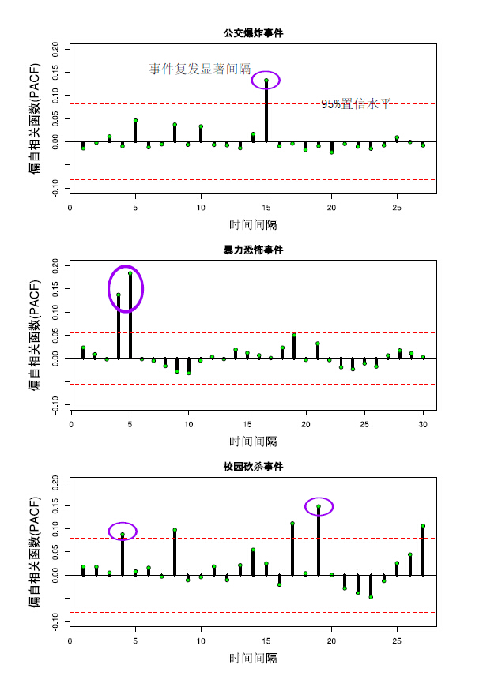 -
空间触发关系研究
我们对3类事件在空间触发关系进行分析。首先我 们以省级单位为空间划分单位对各个省危害公共安全 事件发生频次做相关性分析，但并没有发现明显的相 关性特征。然而当我们将地理分区作为空间划分单位， 每个地理分区包依照空间位置含若干个省，对各个地 区事件发生频次做相关性分析，发现各地区事件发生 频次之间具有较为明显的相关性特征。如图所示
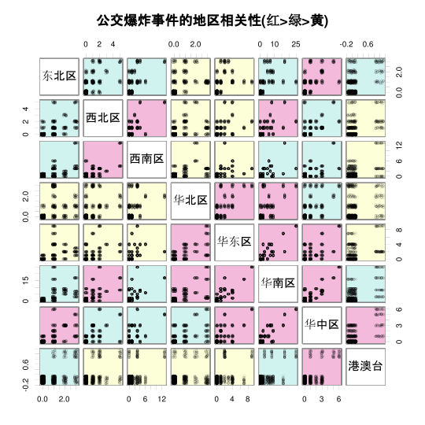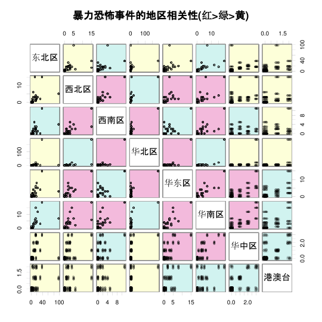 -
新闻媒体传播：报导数、报导篇幅、媒体数、评 论数
在没有大事件 发生时，往往在全国范围内很少有危害公共安全事件 的发生，即使有也是程度很小的事件(日媒体报道量小 于10)。然而当发生一起大事件时，新闻媒体会把这件 事件以很快的速度传播到全国各地，而这种媒体的传 播会带动同系列事件的发生，甚至会触发另一起大事 件的发生。可见新闻媒体的传播对同系列事件的发生具有较大影响。
 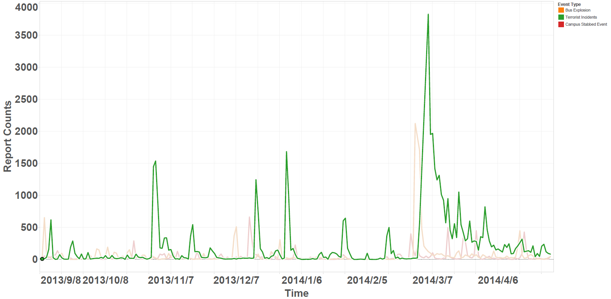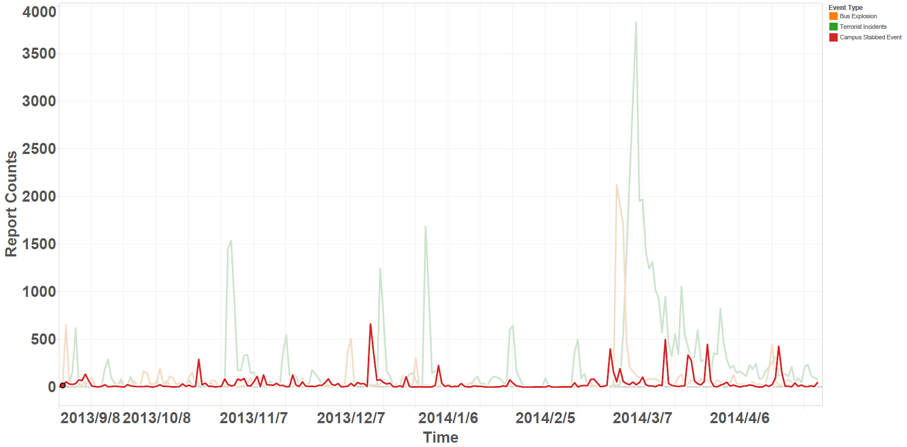
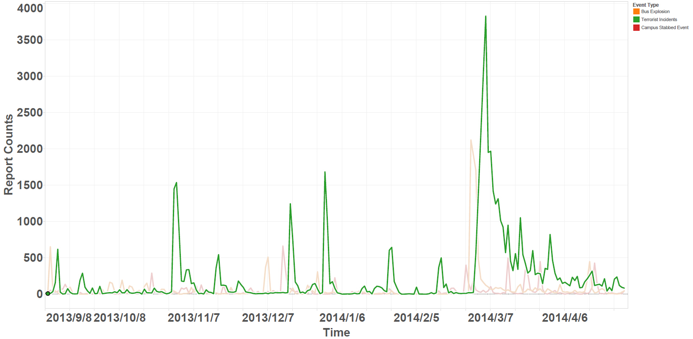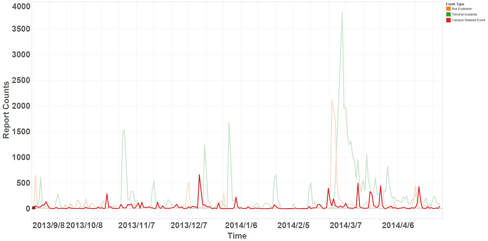
不同类事件共性分析
其实不仅是同系列存在这些触发关系，在不同 系列事件的分布规律中，也会存在一些共性。
我们仍然从时间、空间、新闻媒体三个角度对三 类危害公共安全事件进行分析，发现三类事件之间的 分布规律共性，进而找到事件发生的影响因素。
时间特征共性分析
三类危害公共安全事件均 在工作日发生次数的较多，而在双休日发生次数的较 少。而从节日分布的角度来看，元旦、除夕、建 党节等均是三类危害公共安全事件的多发时段。
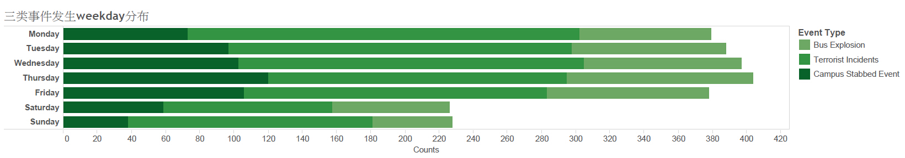 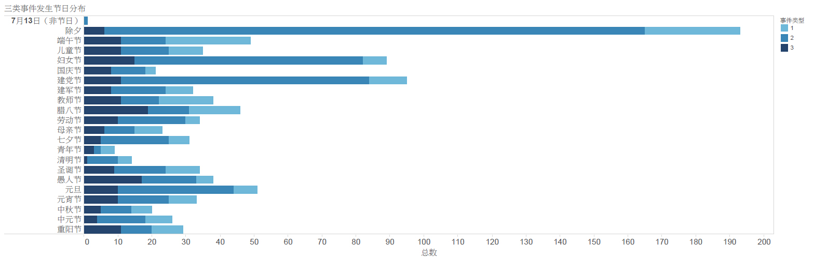空间特征共性分析
公交车爆炸事件多发生于华东地区，包括山东、 江苏、浙江以及福建、广东等省；校园砍杀事件多发 生于西部边境省份，包括新疆自治区、云南省；校园 砍杀事件则多分布于中国南方地区，河南、广东、江 苏等省。
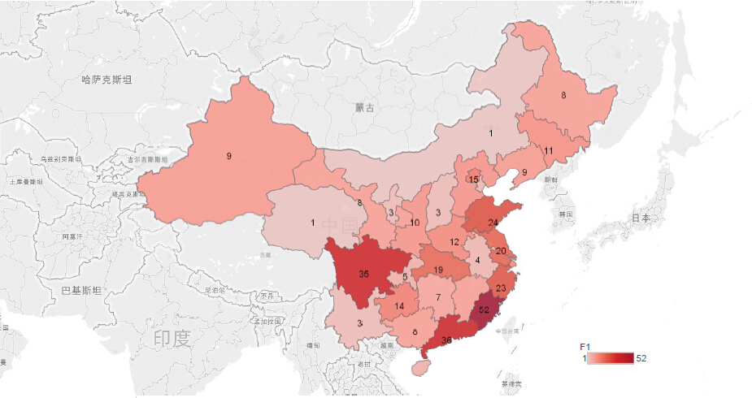 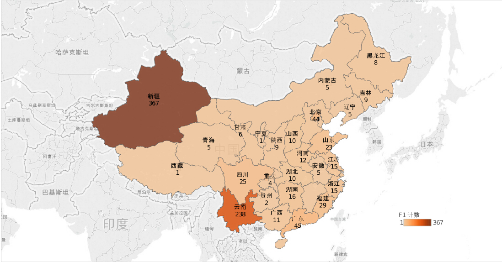 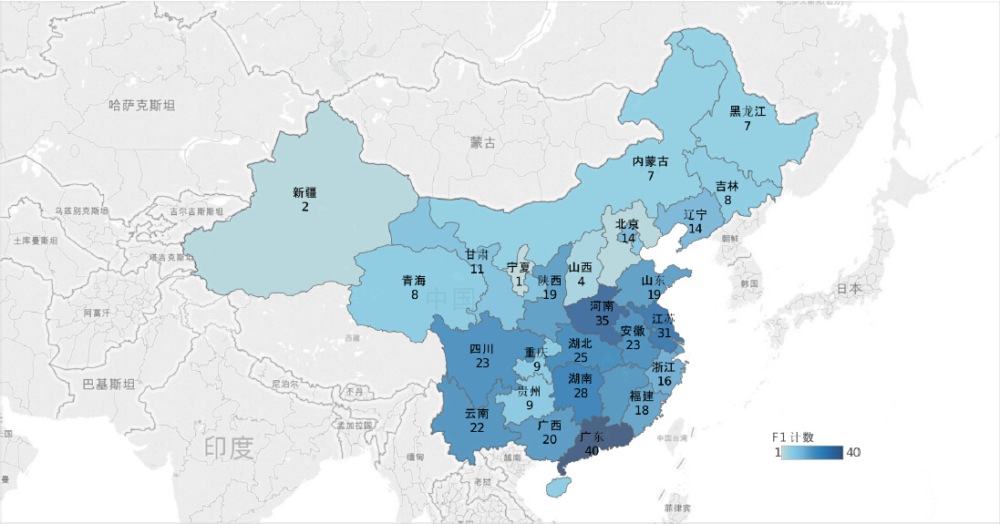媒体特征共性分析
当某一系列一起特大事件(日报导量 超过1000条的事件)发生时，在一周时间内往往会伴随 有不同系列事件的重大事件(日报导量超过500条的事 件)发生。
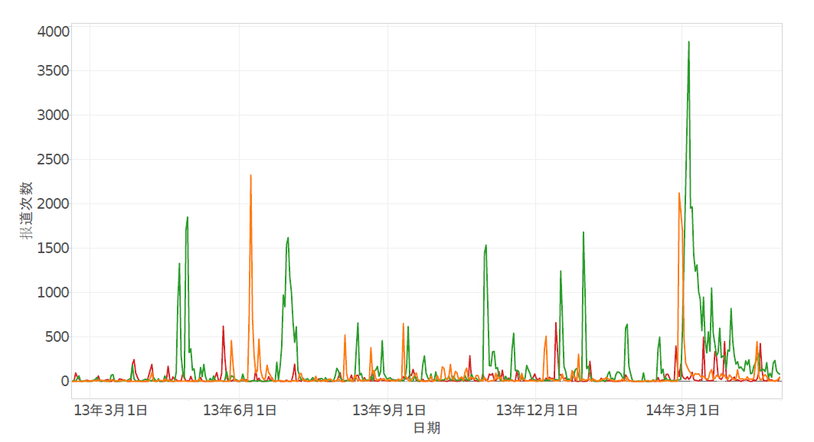可视分析
为了更好地一体化展示事件发生的时间、地点、 严重程度、事件类型，我们以动态网页的形式对三类 公共事件从进行了可视化展示。
可视化展示的数据为2013.1∼2014.4的15个月的公 共事件数据。以周为单位进行数据展示，每三秒钟动 态更新一次。可视化以颜色表示三类公共事件，绿色为公交车爆炸事件、黄色为暴恐事件、红色为校园砍 杀事件；以圈大小表示事件的严重程度(用每个事件的 总报道量表示)；每个圈出现时间表示媒体报导时间。
事件预测
了解公共危害事件的触发以及传播机理，找到事 件间的影响关系和共性，最终的目的是为了抑制事件 的发生，通过对事件可能发生的时间和地点进行准确 预测，能够提前做好相应的预防措施（加强管制）和 管控方案。本节提供一种事件预测方法，主要针对各 区域（省）在未来一段时间，事件是否发生以及发生 的次数进行预测。
事件预测的框架和数据流如图所示:
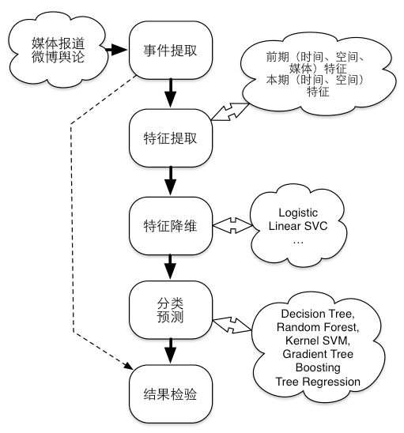根据前文的分析，我们可以将某类事件发生的 可能影响因素归为5大类：前期（t时间段内）时间（发 生频率，距离上一次发生的时长）因素；前期空间（事件发生点的空间分布）因素；前期媒体因素（媒体报道量，社会舆论情绪）；本期时间（月份、季节、是否包含重大 节日）因素；本期空间（本地过往该事 件发生的频率，经济水平，人口数量和民族组成）因 素。上述5个因素也可分为两大类（如下图所示），即前期时间、空间、媒体因素，以及本期时间和空间因素。
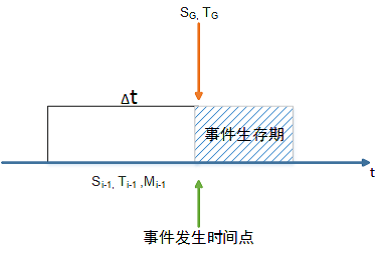由于事件的发生具有离散性的特点，因此，针对 某区域、某时间段内事件的发生，我们主要对事件是 否发生、事件发生频次，这两个指标进行预测。
事件是否发生预测
实验证明，Gradient Boosting（梯度提升决策树）效 果最好，因此将其作为我们的最终预测算法。
事件发生频次
对于事件发生次数的预测问题，即连续值的预测 问题，我们主要采用了回归树的方法对其进行预测。
实验对比与分析
事件提取算法评估
| 事件类型 | 误报率 | 漏报率 |
|---|---|---|
| 公交车爆炸事件 | 14.28% | 12.09% |
| 暴恐事件 | 12.39% | 14.05% |
| 校园砍杀事件 | 14.10% | 11.54% |
针对事件是否发生和发生次数两类预测值，分别 采用准确率和平均绝对误差评估。
评估中，我们使用了4种数据评估算法：
预测算法评估
| 评估算法 | 准确率 | 预测频次误差 |
|---|---|---|
| 常规算法 | 64.50% | 0.8956 |
| Leave-one-out算法 | 82.34% | 0.5250 |
| K-Fold算法 | 82.34% | 0.5234 |
| 滑动窗口 | 75.27% | 0.5525 |